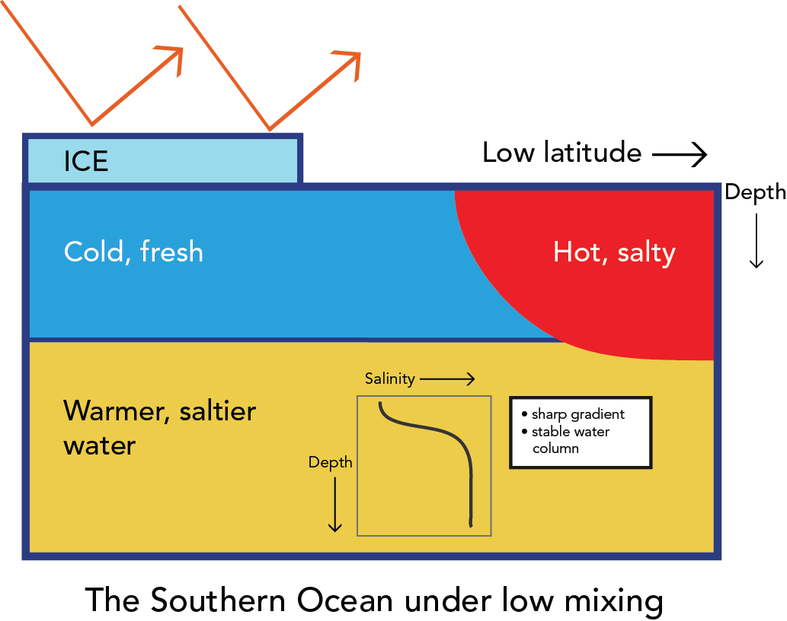

Projects
How increasing mixing warms the polar regions
Oceans
One of the big questions in paleoclimate is how to warm polar regions
without significantly warming the equator. For example during parts of
the Cretaceous, dinosaurs were found in what is now the Arctic, but equatorial
regions were not significantly warmer. One line
of attempts to explain this phenomenon has focussed on changing
the transport of heat within the ocean. A number
of researchers have proposed that different continental configurations could
have caused the heat transport to increase.
In a paper recently submitted to the Journal of Advances in Modeling the Earth
System Marie-Aude Pradal and Anand Gnanadesikan suggest a different
pathway to warming. Instead of changing continental configurations,
they increased the efficiency with which temperature and salinity are stirred by turbulence
between the high and low latitudes in a computer model of the atmosphere, oceans
and sea ice. They found that changes in this mixing efficiency
could produce strong warming in the Southern Ocean of up to 7C locally. However,
they found that such warming wasn't always accompanied by higher poleward
ocean heat transport.
Instead, Pradal and Gnanadesikan found that changes in the sea surface temperature were accompanied by changes
in the difference in salinity between deep and surface waters. If the deep waters are much
saltier than the surface waters, the surface waters
tend to get much colder. This relationship holds within individual simulations as a result of natural
variability as well as across simulations with different levels of mixing. Higher mixing reduces
the contrast in salinity between surface and deep waters, making it harder to form
sea ice and allowing more absorption of sunlight.


This result implies that warming in high latitudes may be the result of increased export
of freshwater and the resulting breakdown of stratification. This in turn suggests that modelers
should potentially focus on opening pathways to the high latitudes by which freshwater can
escape. Currently the distribution of land and ocean ridges around the Arctic limits this. Could changes-
potentially forced by changes in the mantle- alter this connectivity? Future runs with climate models
are planned to investigate this possibility.